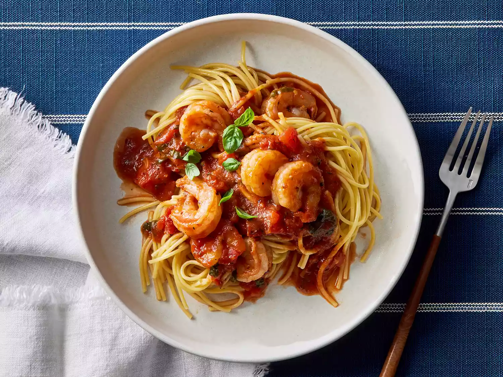

Shrimp Marinara

Description
This is great for a quick weeknight meal, but I could also see it as a candlelight dinner for two―recipe
developer
Juliana Hale
says of this shrimp marinara recipe.
Ingredients
These are the ingredients you'll need to make this restaurant-worthy shrimp marinara recipe:
- Pasta: This shrimp marinara recipe starts with dry spaghetti noodles.
- Oil: Cook the shrimp in extra-virgin olive oil.
- Shrimp: You'll need a pound of peeled and deveined shrimp.
- Seasonings: This dish is seasoned with fresh garlic, crushed red pepper, fresh basil, dried
oregano, and kosher salt.
- Canned tomatoes: The marinara sauce calls for canned fire-roasted tomatoes and canned
tomato sauce.
- Balsamic vinegar: Add bold flavor and brightness with a tablespoon of balsamic vinegar.
Steps
You'll find the full, step-by-step recipe below — but here's a brief overview of what you can expect when you
make
- Make the spaghetti.
- Cook the shrimp and transfer to a plate.
- Cook the garlic and red pepper to the skillet and cook until fragrant.
- Stir in the remaining ingredients and bring to a boil, then simmer until thickened.
- Return the shrimp to the skillet and cook until heated through.
- Serve over spaghetti and garnish with fresh basil.
Home